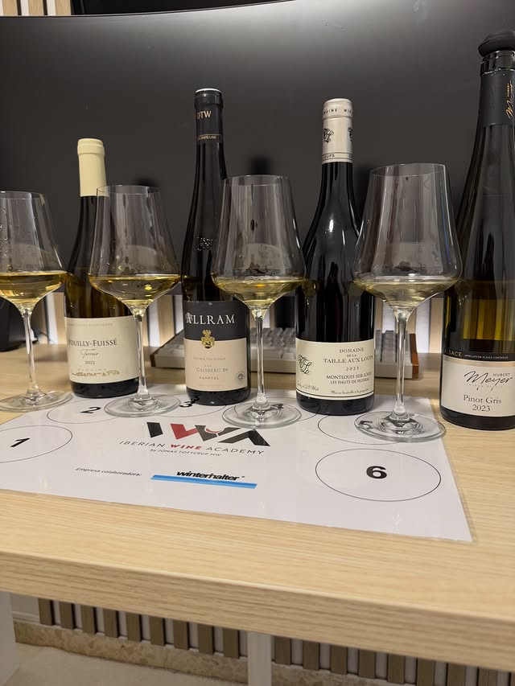
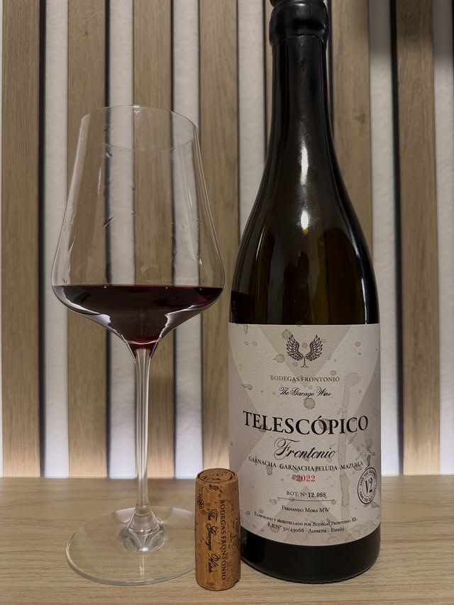
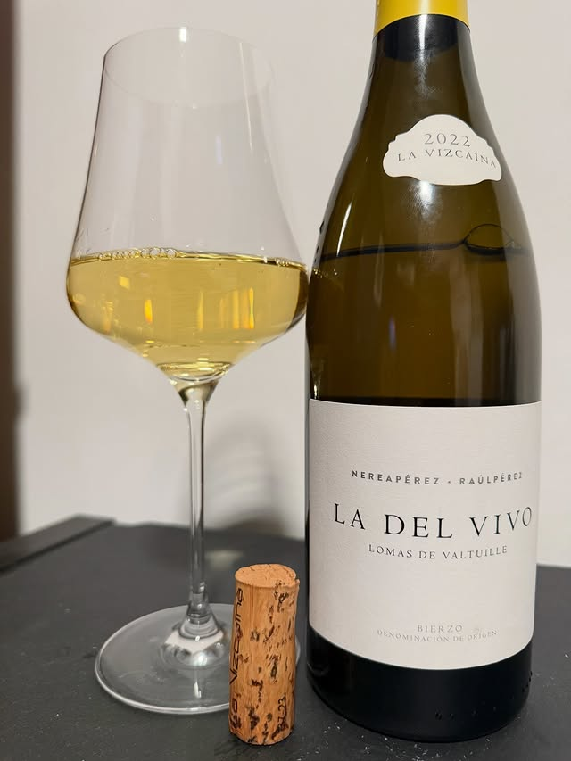

Ingeniero de formación, apasionado del vino por vocación. Catas, cursos y consultoría en Málaga — para quien quiere entender lo que tiene en la copa.



Soy Juanjo García. Ingeniero de formación y apasionado del vino por vocación — un día decidí que "me gusta" no era suficiente respuesta y me puse a estudiar en serio. El WSET Level 3 lo hice con la Iberian Wine Academy y fue lo mejor que pude hacer por mi paladar.
Mi forma de acercarme al vino viene directa de la ingeniería: entender antes de opinar. En mis catas no hay frases poéticas de relleno — hay contexto, hay criterio y hay conversación real sobre lo que estás bebiendo.
Hago catas en Málaga, asesoro a restaurantes con sus cartas y tengo un podcast sobre vino hecho con IA que resulta más útil de lo que parece.
Para amigos, familia o cualquier excusa que necesites. Sin protocolo innecesario — con contexto real sobre lo que estás probando.
Consultar →Teambuilding, bienvenida a clientes, cierre de acuerdos con algo memorable. Lo adapto al número de personas y al tono del evento.
Consultar →Me desplazo a tu casa, oficina o local. Llevo el material, los vinos y la dinámica. Solo tienes que poner los invitados.
Consultar →Por región, por uva, por precio, por maridaje. Hay muchas formas de organizar una cata y cada formato enseña cosas distintas.
Consultar →Para quien quiere ir más allá de "me gusta o no me gusta". Aprende a leer una etiqueta, identificar defectos, entender regiones y elegir bien.
Consultar →Bodas, cumpleaños, cenas de empresa. Selecciono los vinos que van bien con tu menú y explico el porqué a quien quiera escuchar.
Consultar →Para regalo, para tu bodega personal o para una ocasión concreta. Te digo qué comprar, dónde y por qué — sin que tengas que confiar en que el dependiente sabe más que tú.
Consultar →¿Quieres explorar una región en profundidad, entender cómo funciona el mercado o saber qué guardar y qué abrir ya? Hablamos.
Consultar →Diseño la carta teniendo en cuenta tu cocina, tu ticket medio y tus márgenes. Selección de proveedores y, si hace falta, formación básica para el equipo de sala.
Consultar →Camareros y personal de sala que saben hablar de vino venden más y mejor. Talleres prácticos adaptados al nivel y al tipo de local.
Consultar →Organizo escapadas enológicas por Málaga y otras denominaciones. Selección de bodegas, logística y contexto antes de cada visita para que aproveches mejor la experiencia.
Consultar →Un podcast sobre vino creado con inteligencia artificial. Cada episodio explora una región, una variedad o un concepto enológico de forma accesible y rigurosa.
Disponible en Spotify.
Escuchar en Spotify ↗Cuéntame qué tienes en mente. Te respondo rápido y adaptamos el servicio exactamente a lo que necesitas.